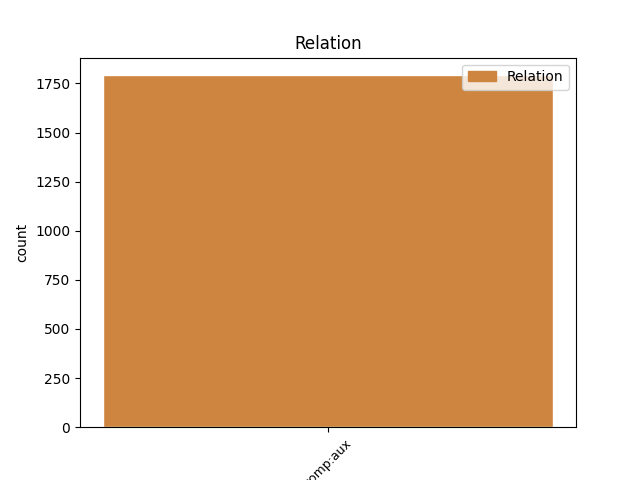
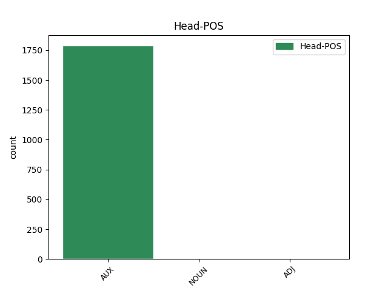
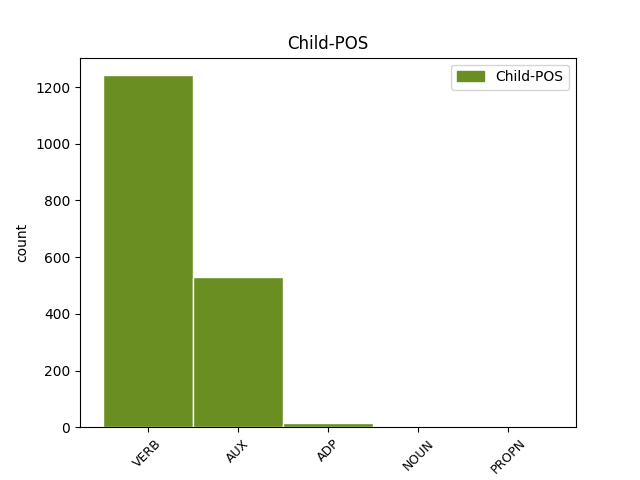

Distribution of features within this leaf



Agreement Rules sorted by frequency.
- When the dependent token is the complement for auxiliary(comp:aux) of the head token, and the head token is AUX
1 افغانستان _ _ _ _ 0 _ _ _
2 مےں _ _ _ _ 0 _ _ _
3 امریکی _ _ _ _ 0 _ _ _
4 مداخلت _ _ _ _ 0 _ _ _
5 کے _ _ _ _ 0 _ _ _
6 حوالے _ _ _ _ 0 _ _ _
7 سے _ _ _ _ 0 _ _ _
8 پاکستان _ _ _ _ 0 _ _ _
9 کے _ _ _ _ 0 _ _ _
10 بارے _ _ _ _ 0 _ _ _
11 مےں _ _ _ _ 0 _ _ _
12 امریکی _ _ _ _ 0 _ _ _
13 پالیسی _ _ _ _ 0 _ _ _
14 مےں _ _ _ _ 0 _ _ _
15 '' _ _ _ _ 0 _ _ _
16 ڈومور _ _ _ _ 0 _ _ _
17 '' _ _ _ _ 0 _ _ _
18 کا _ _ _ _ 0 _ _ _
19 لفظ _ _ _ _ 0 _ _ _
20 بار _ _ _ _ 0 _ _ _
21 بار _ _ _ _ 0 _ _ _
22 دہرایا _ _ _ _ 0 _ _ _
23 جاتا جا AUX VAUX Aspect=Imp|Gender=Masc|Number=Sing|VerbForm=Part 24 comp:aux _ ChunkId=VGF|ChunkType=child|Tam=wA|Vib=تا
24 رہا رہ AUX VAUX Aspect=Perf|Gender=Masc|Number=Sing|VerbForm=Part 0 _ _ _
25 ہے _ _ _ _ 0 _ _ _
26 حالانکہ _ _ _ _ 0 _ _ _
27 اس _ _ _ _ 0 _ _ _
28 جنگ _ _ _ _ 0 _ _ _
29 مےں _ _ _ _ 0 _ _ _
30 پاکستانیوں _ _ _ _ 0 _ _ _
31 کی _ _ _ _ 0 _ _ _
32 قربانیاں _ _ _ _ 0 _ _ _
33 سب _ _ _ _ 0 _ _ _
34 سے _ _ _ _ 0 _ _ _
35 زیادہ _ _ _ _ 0 _ _ _
36 ہےں _ _ _ _ 0 _ _ _
37 ۔ _ _ _ _ 0 _ _ _
1 باپ _ _ _ _ 0 _ _ _
2 نے _ _ _ _ 0 _ _ _
3 گھر _ _ _ _ 0 _ _ _
4 مےں _ _ _ _ 0 _ _ _
5 قید _ _ _ _ 0 _ _ _
6 کر _ _ _ _ 0 _ _ _
7 دیا _ _ _ _ 0 _ _ _
8 لیکن _ _ _ _ 0 _ _ _
9 انھوں _ _ _ _ 0 _ _ _
10 نے _ _ _ _ 0 _ _ _
11 عیسائی _ _ _ _ 0 _ _ _
12 مذہب _ _ _ _ 0 _ _ _
13 قبول _ _ _ _ 0 _ _ _
14 کرتے _ _ _ _ 0 _ _ _
15 ہوئے _ _ _ _ 0 _ _ _
16 سب _ _ _ _ 0 _ _ _
17 سے _ _ _ _ 0 _ _ _
18 بڑے بڑا ADJ JJ Case=Nom|Gender=Masc|Number=Sing 0 _ _ _
19 گرجا گرجا NOUN NN Case=Acc|Gender=Masc|Number=Sing|Person=3 18 comp:aux _ ChunkId=NP7|ChunkType=head|Tam=0|Vib=0
20 کو _ _ _ _ 0 _ _ _
21 جانا _ _ _ _ 0 _ _ _
22 پسند _ _ _ _ 0 _ _ _
23 کیا _ _ _ _ 0 _ _ _
24 ۔ _ _ _ _ 0 _ _ _
1 حکومت _ _ _ _ 0 _ _ _
2 کی _ _ _ _ 0 _ _ _
3 جانب _ _ _ _ 0 _ _ _
4 سے _ _ _ _ 0 _ _ _
5 تشکیل _ _ _ _ 0 _ _ _
6 دی _ _ _ _ 0 _ _ _
7 گئی _ _ _ _ 0 _ _ _
8 لوک _ _ _ _ 0 _ _ _
9 پال _ _ _ _ 0 _ _ _
10 بل _ _ _ _ 0 _ _ _
11 تیاری تیاری NOUN NNC Case=Nom|Gender=Fem|Number=Sing 0 _ _ _
12 کمیٹی کمیٹی NOUN NN Case=Acc|Gender=Fem|Number=Sing|Person=3 11 comp:aux _ ChunkId=NP3|ChunkType=head|Tam=0|Vib=0
13 مےں _ _ _ _ 0 _ _ _
14 جہاں _ _ _ _ 0 _ _ _
15 مرکزی _ _ _ _ 0 _ _ _
16 وزرا _ _ _ _ 0 _ _ _
17 شامل _ _ _ _ 0 _ _ _
18 تھے _ _ _ _ 0 _ _ _
19 , _ _ _ _ 0 _ _ _
20 وہیں _ _ _ _ 0 _ _ _
21 سیول _ _ _ _ 0 _ _ _
22 سماج _ _ _ _ 0 _ _ _
23 کے _ _ _ _ 0 _ _ _
24 پانچ _ _ _ _ 0 _ _ _
25 ارکان _ _ _ _ 0 _ _ _
26 کو _ _ _ _ 0 _ _ _
27 بھی _ _ _ _ 0 _ _ _
28 شامل _ _ _ _ 0 _ _ _
29 کیا _ _ _ _ 0 _ _ _
30 گیا _ _ _ _ 0 _ _ _
31 تھا _ _ _ _ 0 _ _ _
32 ۔ _ _ _ _ 0 _ _ _
Disagree Examples:
1 اس _ _ _ _ 0 _ _ _
2 کے _ _ _ _ 0 _ _ _
3 علاوہ _ _ _ _ 0 _ _ _
4 اس _ _ _ _ 0 _ _ _
5 راستہ _ _ _ _ 0 _ _ _
6 سے _ _ _ _ 0 _ _ _
7 جانے _ _ _ _ 0 _ _ _
8 والی _ _ _ _ 0 _ _ _
9 سواریوں _ _ _ _ 0 _ _ _
10 کو _ _ _ _ 0 _ _ _
11 بھی _ _ _ _ 0 _ _ _
12 مشکلات _ _ _ _ 0 _ _ _
13 پیش _ _ _ _ 0 _ _ _
14 آئی آ VERB VM Aspect=Perf|Gender=Fem|Number=Sing|VerbForm=Part|Voice=Act 15 comp:aux _ ChunkId=VGF|ChunkType=head|Stype=declarative|Tam=yA|Vib=یا
15 ہیں ہے AUX VAUX Gender=Masc|Mood=Ind|Number=Plur|Person=3|Tense=Pres|VerbForm=Fin 0 _ _ _
16 ۔ _ _ _ _ 0 _ _ _
1 واضح _ _ _ _ 0 _ _ _
2 رہے _ _ _ _ 0 _ _ _
3 رواں _ _ _ _ 0 _ _ _
4 برس _ _ _ _ 0 _ _ _
5 آسٹریلین _ _ _ _ 0 _ _ _
6 اوپن _ _ _ _ 0 _ _ _
7 کے _ _ _ _ 0 _ _ _
8 فائنل _ _ _ _ 0 _ _ _
9 میں _ _ _ _ 0 _ _ _
10 دینارا _ _ _ _ 0 _ _ _
11 سفینا _ _ _ _ 0 _ _ _
12 کو _ _ _ _ 0 _ _ _
13 سرینا _ _ _ _ 0 _ _ _
14 ولیمس _ _ _ _ 0 _ _ _
15 کے _ _ _ _ 0 _ _ _
16 خلاف _ _ _ _ 0 _ _ _
17 شکست _ _ _ _ 0 _ _ _
18 برداشت _ _ _ _ 0 _ _ _
19 کرنی _ _ _ _ 0 _ _ _
20 پڑی _ _ _ _ 0 _ _ _
21 جبکہ _ _ _ _ 0 _ _ _
22 گزشتہ _ _ _ _ 0 _ _ _
23 سیزن _ _ _ _ 0 _ _ _
24 فرنچ _ _ _ _ 0 _ _ _
25 اوپن _ _ _ _ 0 _ _ _
26 میں _ _ _ _ 0 _ _ _
27 سفینا _ _ _ _ 0 _ _ _
28 کو _ _ _ _ 0 _ _ _
29 سربیائی _ _ _ _ 0 _ _ _
30 ٹینس _ _ _ _ 0 _ _ _
31 اسٹار _ _ _ _ 0 _ _ _
32 اینا _ _ _ _ 0 _ _ _
33 ایوانووچ _ _ _ _ 0 _ _ _
34 نے _ _ _ _ 0 _ _ _
35 شکست _ _ _ _ 0 _ _ _
36 دی دے VERB VM Aspect=Perf|Gender=Fem|Number=Sing|VerbForm=Part|Voice=Act 37 comp:aux _ ChunkId=VGF3|ChunkType=head|Stype=declarative|Tam=yA|Vib=یا
37 تھی تھا AUX VAUX Gender=Masc|Mood=Ind|Number=Sing|Person=3|Tense=Past|VerbForm=Fin 0 _ _ _
38 اور _ _ _ _ 0 _ _ _
39 اس _ _ _ _ 0 _ _ _
40 طرح _ _ _ _ 0 _ _ _
41 وہ _ _ _ _ 0 _ _ _
42 دو _ _ _ _ 0 _ _ _
43 مرتبہ _ _ _ _ 0 _ _ _
44 گرانڈ _ _ _ _ 0 _ _ _
45 سلام _ _ _ _ 0 _ _ _
46 خطابات _ _ _ _ 0 _ _ _
47 سے _ _ _ _ 0 _ _ _
48 محروم _ _ _ _ 0 _ _ _
49 رہیں _ _ _ _ 0 _ _ _
50 ۔ _ _ _ _ 0 _ _ _
1 23 _ _ _ _ 0 _ _ _
2 سالہ _ _ _ _ 0 _ _ _
3 سفینا _ _ _ _ 0 _ _ _
4 نے _ _ _ _ 0 _ _ _
5 کہا _ _ _ _ 0 _ _ _
6 کہ _ _ _ _ 0 _ _ _
7 سرینا _ _ _ _ 0 _ _ _
8 اپنی _ _ _ _ 0 _ _ _
9 10 _ _ _ _ 0 _ _ _
10 گرانڈ _ _ _ _ 0 _ _ _
11 سلام _ _ _ _ 0 _ _ _
12 فتوحات _ _ _ _ 0 _ _ _
13 کی _ _ _ _ 0 _ _ _
14 بنیاد _ _ _ _ 0 _ _ _
15 پر _ _ _ _ 0 _ _ _
16 خود _ _ _ _ 0 _ _ _
17 کو _ _ _ _ 0 _ _ _
18 نمبر _ _ _ _ 0 _ _ _
19 ون _ _ _ _ 0 _ _ _
20 قرار _ _ _ _ 0 _ _ _
21 دے _ _ _ _ 0 _ _ _
22 رہی _ _ _ _ 0 _ _ _
23 ہیں _ _ _ _ 0 _ _ _
24 لیکن _ _ _ _ 0 _ _ _
25 عمر _ _ _ _ 0 _ _ _
26 میں _ _ _ _ 0 _ _ _
27 وہ _ _ _ _ 0 _ _ _
28 مجھ _ _ _ _ 0 _ _ _
29 سے _ _ _ _ 0 _ _ _
30 بڑی _ _ _ _ 0 _ _ _
31 ہیں _ _ _ _ 0 _ _ _
32 اور _ _ _ _ 0 _ _ _
33 تجربہ_کار _ _ _ _ 0 _ _ _
34 بھی _ _ _ _ 0 _ _ _
35 ہیں _ _ _ _ 0 _ _ _
36 تو _ _ _ _ 0 _ _ _
37 چلیے _ _ _ _ 0 _ _ _
38 دیکھتے _ _ _ _ 0 _ _ _
39 ہیں _ _ _ _ 0 _ _ _
40 کہ _ _ _ _ 0 _ _ _
41 جب _ _ _ _ 0 _ _ _
42 میں _ _ _ _ 0 _ _ _
43 ان _ _ _ _ 0 _ _ _
44 کی _ _ _ _ 0 _ _ _
45 عمر _ _ _ _ 0 _ _ _
46 کو _ _ _ _ 0 _ _ _
47 پہنچ _ _ _ _ 0 _ _ _
48 جاؤں _ _ _ _ 0 _ _ _
49 گی _ _ _ _ 0 _ _ _
50 تو _ _ _ _ 0 _ _ _
51 میری _ _ _ _ 0 _ _ _
52 فہرست _ _ _ _ 0 _ _ _
53 میں _ _ _ _ 0 _ _ _
54 کتنی _ _ _ _ 0 _ _ _
55 فتوحات _ _ _ _ 0 _ _ _
56 درج _ _ _ _ 0 _ _ _
57 ہوتی ہو VERB VM Aspect=Imp|Gender=Fem|Number=Sing|VerbForm=Part|Voice=Pass 58 comp:aux _ ChunkId=VGF8|ChunkType=head|Stype=declarative|Tam=wA|Vib=تا
58 ہیں ہے AUX VAUX Gender=Masc|Mood=Ind|Number=Plur|Person=3|Tense=Pres|VerbForm=Fin 0 _ _ _
59 ، _ _ _ _ 0 _ _ _
60 جس _ _ _ _ 0 _ _ _
61 کی _ _ _ _ 0 _ _ _
62 بنیاد _ _ _ _ 0 _ _ _
63 پر _ _ _ _ 0 _ _ _
64 نمبر _ _ _ _ 0 _ _ _
65 ایک _ _ _ _ 0 _ _ _
66 کھلاڑی _ _ _ _ 0 _ _ _
67 کا _ _ _ _ 0 _ _ _
68 فیصلہ _ _ _ _ 0 _ _ _
69 بہ_آسانی _ _ _ _ 0 _ _ _
70 کر _ _ _ _ 0 _ _ _
71 لیا _ _ _ _ 0 _ _ _
72 جائے _ _ _ _ 0 _ _ _
73 گا _ _ _ _ 0 _ _ _
74 ۔ _ _ _ _ 0 _ _ _
1 واضح _ _ _ _ 0 _ _ _
2 رہے _ _ _ _ 0 _ _ _
3 رواں _ _ _ _ 0 _ _ _
4 برس _ _ _ _ 0 _ _ _
5 آسٹریلین _ _ _ _ 0 _ _ _
6 اوپن _ _ _ _ 0 _ _ _
7 کے _ _ _ _ 0 _ _ _
8 فائنل _ _ _ _ 0 _ _ _
9 میں _ _ _ _ 0 _ _ _
10 دینارا _ _ _ _ 0 _ _ _
11 سفینا _ _ _ _ 0 _ _ _
12 کو _ _ _ _ 0 _ _ _
13 سرینا _ _ _ _ 0 _ _ _
14 ولیمس _ _ _ _ 0 _ _ _
15 کے _ _ _ _ 0 _ _ _
16 خلاف _ _ _ _ 0 _ _ _
17 شکست _ _ _ _ 0 _ _ _
18 برداشت _ _ _ _ 0 _ _ _
19 کرنی _ _ _ _ 0 _ _ _
20 پڑی _ _ _ _ 0 _ _ _
21 جبکہ _ _ _ _ 0 _ _ _
22 گزشتہ _ _ _ _ 0 _ _ _
23 سیزن _ _ _ _ 0 _ _ _
24 فرنچ _ _ _ _ 0 _ _ _
25 اوپن _ _ _ _ 0 _ _ _
26 میں _ _ _ _ 0 _ _ _
27 سفینا _ _ _ _ 0 _ _ _
28 کو _ _ _ _ 0 _ _ _
29 سربیائی _ _ _ _ 0 _ _ _
30 ٹینس _ _ _ _ 0 _ _ _
31 اسٹار _ _ _ _ 0 _ _ _
32 اینا _ _ _ _ 0 _ _ _
33 ایوانووچ _ _ _ _ 0 _ _ _
34 نے _ _ _ _ 0 _ _ _
35 شکست _ _ _ _ 0 _ _ _
36 دی دے VERB VM Aspect=Perf|Gender=Fem|Number=Sing|VerbForm=Part|Voice=Act 37 comp:aux _ ChunkId=VGF3|ChunkType=head|Stype=declarative|Tam=yA|Vib=یا
37 تھی تھا AUX VAUX Gender=Masc|Mood=Ind|Number=Sing|Person=3|Tense=Past|VerbForm=Fin 0 _ _ _
38 اور _ _ _ _ 0 _ _ _
39 اس _ _ _ _ 0 _ _ _
40 طرح _ _ _ _ 0 _ _ _
41 وہ _ _ _ _ 0 _ _ _
42 دو _ _ _ _ 0 _ _ _
43 مرتبہ _ _ _ _ 0 _ _ _
44 گرانڈ _ _ _ _ 0 _ _ _
45 سلام _ _ _ _ 0 _ _ _
46 خطابات _ _ _ _ 0 _ _ _
47 سے _ _ _ _ 0 _ _ _
48 محروم _ _ _ _ 0 _ _ _
49 رہیں _ _ _ _ 0 _ _ _
50 ۔ _ _ _ _ 0 _ _ _
1 حکومت _ _ _ _ 0 _ _ _
2 اگر _ _ _ _ 0 _ _ _
3 اس _ _ _ _ 0 _ _ _
4 پلان _ _ _ _ 0 _ _ _
5 ہی _ _ _ _ 0 _ _ _
6 کو _ _ _ _ 0 _ _ _
7 منظور _ _ _ _ 0 _ _ _
8 کرتے _ _ _ _ 0 _ _ _
9 ہوئے _ _ _ _ 0 _ _ _
10 جی _ _ _ _ 0 _ _ _
11 او _ _ _ _ 0 _ _ _
12 جاری _ _ _ _ 0 _ _ _
13 کرتی _ _ _ _ 0 _ _ _
14 ہے _ _ _ _ 0 _ _ _
15 تو _ _ _ _ 0 _ _ _
16 ہر _ _ _ _ 0 _ _ _
17 ایک _ _ _ _ 0 _ _ _
18 بلدی _ _ _ _ 0 _ _ _
19 وارڈ _ _ _ _ 0 _ _ _
20 29000 _ _ _ _ 0 _ _ _
21 ہزار _ _ _ _ 0 _ _ _
22 تا _ _ _ _ 0 _ _ _
23 35000 _ _ _ _ 0 _ _ _
24 ہزار _ _ _ _ 0 _ _ _
25 ووٹرس _ _ _ _ 0 _ _ _
26 پر _ _ _ _ 0 _ _ _
27 مشتمل _ _ _ _ 0 _ _ _
28 ہوگا _ _ _ _ 0 _ _ _
29 اور _ _ _ _ 0 _ _ _
30 ہر _ _ _ _ 0 _ _ _
31 وارڈ _ _ _ _ 0 _ _ _
32 میں _ _ _ _ 0 _ _ _
33 30 _ _ _ _ 0 _ _ _
34 پولنگ _ _ _ _ 0 _ _ _
35 اسٹیشن _ _ _ _ 0 _ _ _
36 قائم _ _ _ _ 0 _ _ _
37 کرنے کر VERB VM Gender=Masc|Number=Plur|VerbForm=Inf|Voice=Act 38 comp:aux _ ChunkId=VGF3|ChunkType=head|Stype=declarative|Tam=nA|Vib=نا
38 پڑیں پڑ AUX VAUX Aspect=Perf|Gender=Fem|Number=Plur|VerbForm=Part 0 _ _ _
39 گے _ _ _ _ 0 _ _ _
40 ۔ _ _ _ _ 0 _ _ _